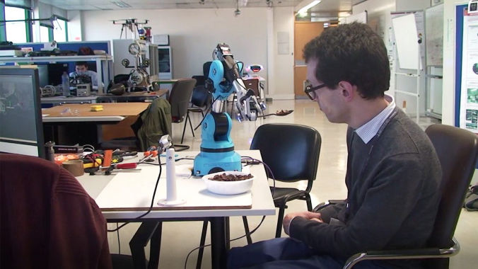

Institute for Systems and Robotics · Instituto Superior Técnico — with CMU and M-ITI
A robot that eats with you.
FeedBot — a symbiotic autonomous robotic arm for meal assistance to motion-impaired people.
Existing feeding assistants scoop blind and deliver to a fixed point in space, leaving the
user to reach the spoon. FeedBot is tasked by a vision system, verifies what it has picked
up, and carries the food all the way to a mouth that will not hold still.
Eating is the activity that most reliably requires another person. For someone living with
cerebral palsy, Parkinson's disease or the aftermath of a stroke, lack of fine motor control
and involuntary movement of the arm and head frustrate every attempt to feed themselves —
and without a robot, every meal needs full human assistance.
FeedBot proposes a fully autonomous mobile arm capable of feeding people with
disabilities, tasked by a vision system rather than by a button, and learning and adapting to
each individual. Commercial feeding assistants acquire food without any feedback on whether
they succeeded, and move to a preprogrammed location to deliver it. FeedBot instead watches:
it confirms the spoon is loaded, tracks the user's head, and shapes its approach around that
person's own movement.
Our vision. Manuel is having lunch. He asks the waiter to open his case,
clamp FeedBot — arm, camera and computer — to the table, and place his meal in the small
containers of the special plate. The robot waits until he rotates his head and fixates the
container with rice, peas and salmon. It scoops a full spoon and moves towards his mouth.
Because of his involuntary movements, the robot cannot stand still and wait for him to
reach it; it must track his head and slowly approach. And because FeedBot has learned a
model of his reflexes — knowing that he twists his head right when he wants to move
forward — it pulls back to a safer position until his head returns to the forward
direction.
The system was developed with, and evaluated at, the Centro de Reabilitação de
Paralisia Cerebral Calouste Gulbenkian (Santa Casa da Misericórdia de Lisboa). Its
three technical layers — reactive planning, vision in the loop, and a model of the user's
own motion — are described below.

FeedBot — a modular arm, a camera and a computer that clamp to an ordinary table.
01Reactive planning
Tracking a goal that moves, while carrying food
Assisted feeding is a tracking task with an unforgiving failure mode: the end effector is
carrying food, the goal is a person's face, and the goal moves unpredictably. A scripted
trajectory cannot survive that. The planning has to be closed-loop, and it has to become
more conservative exactly where a mistake would matter most.
Update the trajectory at a rate set by the moving goal, and let explicit risk regions shape
the approach as the spoon nears the face.
scripted path → closed loop
The act of assisted feeding is a challenging task that requires a good reactive planning
strategy to cope with an unpredictable environment. It can be seen as a tracking task,
where some end effector must travel to a moving goal. This work builds on state-of-the-art
algorithms such as Discriminative Optimization, using a Kinect camera and
a modular robotic arm to implement a closed-form system that performs assisted feeding. It
presents two approaches: a variable-rate function for updating the
trajectory with information on the moving goal, and the definition of
risk regions that shape a safer trajectory.
C. Silva, J. Vongkulbhisal, M. Marques, J. P. Costeira, M. Veloso, “Feedbot — A Robotic Arm
for Autonomous Assisted Feeding”, Progress in Artificial Intelligence (EPIA 2017), LNCS,
pp. 486–497. doi:10.1007/978-3-319-65340-2_40
02Vision in the loop
Did it actually pick anything up?
A feeding robot fails in two places, and both are invisible to an open-loop device: the spoon
can come up empty, and the mouth is never quite where the program assumed it would be. Vision
closes both ends of the motion.
Researchers have over time developed robotic feeding assistants so that people with
disabilities can live more autonomous lives. Current commercial assistants acquire food
without feedback on acquisition success, and move to a preprogrammed location to deliver
it. This work evaluates how vision improves both halves. We show that
visual feedback on whether food was captured increases acquisition
efficiency, and how Discriminative Optimization can be used in
tracking so that the food is brought all the way to the user's mouth rather than to a
preprogrammed feeding location.
A. Candeias, T. Rhodes, M. Marques, J. P. Costeira, M. Veloso, “Vision Augmented Robot
Feeding”, 6th International Workshop on Assistive Computer Vision and Robotics (ACVR),
ECCV Workshops 2018.
doi:10.1007/978-3-030-11024-6_4
03Understanding the user
Learning the person the robot is feeding
A robot that adapts to an individual first has to describe that individual. Involuntary
movement is not noise to be filtered out — it is structure, and it is specific to each
person. Measuring it from an ordinary camera, while the face is partly occluded by the very
movements being measured, is the problem this layer solves.
We propose a methodology to classify the motion of subjects with cerebral palsy based on
RGB image sequences, and present a new dataset with 2D facial landmark trajectories from
images of people with and without disabilities performing specific types of movements.
Depending on those movements parts of the face become occluded, so the 3D face shape and
its motion are recovered within the Structure-from-Motion framework. From
that structure and motion we propose two descriptors — one for the
spatial distribution of the motion, one for the
temporal — discuss their physical meaning, and show they are very
informative about the degree of the subjects' disabilities, classifying people with and
without cerebral palsy from 2D image sequences alone.
Why it matters for the robot
The same descriptors that grade disability from video are what let FeedBot build a model
of an individual's reflexes — and therefore anticipate a head that twists right before it
moves forward, instead of merely reacting to it.
M. Macedo, A. Candeias, M. Marques, “Motion Analysis for People with Cerebral Palsy: A
Vision Based Approach”, IEEE 16th International Conference on Rehabilitation Robotics
(ICORR), 2019.
04Demonstrations
The robot at a meal
FeedBot at a mealTracking the user's head and delivering the spoon.Reactive planningVariable-rate trajectory updates and risk regions — EPIA 2017.Vision augmented feedingAcquisition feedback and tracked delivery — ECCV Workshops 2018.Motion analysis3D facial shape and motion under occlusion — ICORR 2019.More footageThe arm in operation.
With contributions from Catarina Silva, Jayakorn Vongkulbhisal and Mário Macedo.
06Recognition and media
Outside the lab
“Os Melhores do Portugal Tecnológico” 2019 — honourable mention
Awarded by Exame Informática to distinguish researchers still unknown to the
general public, ideas put to the test in universities, and companies doing most for the
environment and sustainability.
Winners
In the era of robotics associated with increasingly intelligent systems, a tour of the
most exciting robot projects made in Portugal — from interaction with children and
seniors to underwater robots — and a conversation with the experts about the future.
Patients at the Calouste Gulbenkian Rehabilitation Centre for Cerebral Palsy will soon
test a robotic arm developed between Instituto Superior Técnico, the Madeira Interactive
Technologies Institute and Carnegie Mellon University. Meet the researcher who created
FeedBot to help with daily meals.
The project is led by four Portuguese researchers and is the result of a partnership
between the Institute for Systems and Robotics of Instituto Superior Técnico and
Carnegie Mellon University.
The robotic arm was developed by a research team from Instituto Superior Técnico, the
Madeira Interactive Technologies Institute (M-ITI) and Carnegie Mellon University.
Antena 1
João Paulo Costeira — Feedbot, o braço robótico que ajuda a alimentar pessoas com deficiência motora
On the computer vision algorithms that let the arm follow the user's movements, and what
it takes to put a robot on the table of someone who needs it.